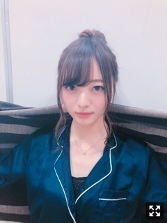
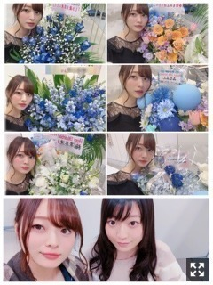
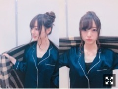
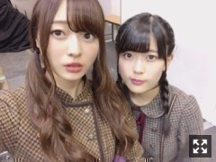
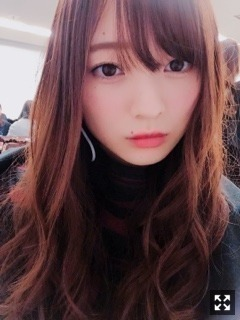

影響力。梅澤美波
みなさまこんにちは！！
乃木坂46 ３期生の
梅澤美波です！！

だんごー！
最近寒い日が続いてますが
いかがお過ごしですか？
今日は楽しいお仕事してきましたよ☺︎
そういえば
雪積もりましたね〜！！
大雪の日、
午後からお仕事だった私は
わくわくしながら玄関のドアをあけました
そしたら真っ白！！
なにこの素敵な景色〜(；；)
ってなって、
滅多に見られない雪を見てひとりでテンション上がってました(笑）
でも通勤、通学の方は
すごく大変でしたよね(；；)
お疲れ様でした(；；)
本当に冬って素敵( .. )
鼻が赤くなるのも
手が痛くなるのも
足のつま先が痛くなるのも全然いい◎
冬の特権！って感じ◎
真っ白の景色を見て
４年前の受験の日を思い出しました☺︎
高校受験の日、
滅多に降らないはずなのに大雪で
教室から見える外の景色は真っ白で
緊張していた私も
なんだか癒され励まされたのを覚えています
高校卒業してまだ１年経ってないんだな〜と思うとなんか不思議（笑）
１／２８、
個別握手会@東京ビッグサイト
ありがとうございました！！
たくさんお話出来て
とっても楽しかったです☺︎
５部制になって、
初めましての方がたくさんいて
新しい出逢いが幸せです( ¨̮ )
１／２８
１部：パジャマ×お団子
２部：黒ロングワンピ×お団子
３部：ロングワンピをスカートアレンジ＆ピンクシャツ×ハーフアップ
４部：白トップスビスチェにショートパンツ×ポニーテール
５部：黒ニット黒スカート×三つ編み一つまとめ
こんな感じでした！！
１部はやっぱり朝早いから
寝坊して来れなかった〜って方が
多いかったなあ( .. )
朝早くから本当にありがとうございます(；；)

お花たくさんありがとう( .. )
いつも当たり前のようにお花があることが
本当に嬉しくて
全然当たり前なんかじゃないのだけど
当たり前のようにお花がそこにあって、用意してくれてる皆様に
感謝しかありません(；；)
幸せです本当にありがとう！

１部のテーマはお家デート！（笑）
ゆるっとお団子！
テーマ伝わったかなあ〜
伝わってた人はいたからきっと伝わってるはずー！（笑）
お団子はちびっ子以来だったけど
好評で嬉しかったので
またやります◎
カップルで会いに来てくれたり
親子で会いに来てくれたり
兄弟で来てくれたり
さっき友達になったんだって連番してくれたり
たくさんの人の関わりがあって
なんだかすごく温かくて幸せな気持ちになります( ¨̮ )
会いに来てくださった皆様
ありがとうございました！！
次の個別握手会は明日！！
東京ビッグサイトです！！
そしてその次は
２／２５のパシフィコ横浜！
来られる方、楽しみにしています☺︎
そしてスペイベありがとうございました！
ゲーム会は黒ひげくん！
今回は４勝１敗で
強さを発揮してしまいまして、、（笑）
プレゼント出来なくてごめんね(；；)
いつもは負けちゃうのに
なんだか今回はわたし強かった！
みんなが弱いのか( ¨̮ )（笑）
そして似顔絵会！
描くのに集中してしまって
目を見てお話できないのが悔しい〜！
描きながらお話できるスキルを身につけたいと思います！（笑）
似てる似てないは置いておいて（笑）
大切にしてね飾ってね☺︎
質問コーナー◎
Q.最近聴いてる曲は？
Aimerさん『星屑ビーナス』
NGT48さん『僕の涙は流れない』
清水翔太さん『君が暮らす街』
ハマるとずーっと同じのばっかり人間◎音楽ないとダメ人間◎
Q.何故冬が好きなんですか？
A.雰囲気と服と寒いのが好き！
Q.コスメポーチ何使ってる？
A.今までずっとLANVINのものを使っていたけど最近マリアンケイトのものに変えました！でっかくて重たいけどぜーんぶはいるから楽ちん！ちなみにリップポーチもマリアンケイト☺︎ももことお揃いのMaison de FLEURのポーチも相変わらず使ってる◎
Q.窓ガラスが曇ったら何書きますか？
A.ハート書きがち（笑）
女の子！！
Q.ボディケア教えて！
A.ボディケアはかなり頻繁に変わるし気分によって変えますが、、
今は、SABONのパチュリラベンダーバニラの香りのボディスクラブ、SABONのボディオイル、SHIGETAのボディミルクを使っています！あとはローラメルシエのクリームで、アンバーバニラの香りは本当に最強！ジルの一昨年に出たキラキラのラメ入りボディジェルも握手会の日などに使ったりもします〜！これは保湿ってより匂いとラメ重視の時用！
ハンドクリーム、ボディオイル、クリーム、香水はたくさんあるので気分で使い分けます！
観に行かせていただきました！
見ている人が幸せになるって
こういうことなんだな〜って感じて
始まって早々涙は出るし手は震えるしで
私の心にズキズキ突き刺さってきました。
ひらがなけやきさんが放つ
優しいオーラというか
柔らかい雰囲気をすごく感じて
会場の一体感に物凄く感動しました。
見て取れる団結力とチームワークって
本当にすごくて
簡単に出せるものではないと思うのに
全部それが伝わってくるし
ただただ見入ってしまいました
私達に今足りないものが何なのか
わかった気がします
私も燃えて頑張らねば！
という気持ちでいっぱいです！
燃えています！
ひらがなけやきさん、
本当にお疲れ様でした！！
今はステージに立つ側になった人間として
観ている方の感覚とか視線とか
大切にしなきゃいけないし忘れちゃいけない
ステージからの景色だけじゃなく
観て学ぶことも多すぎました！
踊りたいよー！
歌いたいよー！
サイリウムの景色が見たいよー！
武道館に帰りたいよー！
この間一人で電車に乗っていて
ねむさに耐えきれず眠ってしまい
ビクッとなって起きたら携帯ふっとばしてしまって
ものすごい恥ずかしさだった（笑）
告知◎
▽１／３１ BUBKA さま 発売中！
ソログラビアです！私好みの雰囲気で撮影していただきました！！とっても楽しかったなあ、、インタビューもたくさん載っています！ソログラビアでのインタビューだと今までで一番長くのせていただいています！たくさん語りました！
▽２／２４ B.L.T. さま
３期生連載なんとありがあいことに２週目です！！嬉しい！！そしてまたもや初回！ありがたいです！かえでとペアで撮影して参りました〜楽しすぎましたっ
ラジオ〜
▽２／３ エバンジェリストスクール！
24:30〜 TOKYO FM さんで放送されます！
若様軍団です！ぜひ聴いてください！☺︎
グラビアやっぱり大好きだなあ( .. )
可愛いお洋服きて撮られるの幸せ！
インタビュー受けたいなあ、話すの好きなんです( ¨̮ )（笑）
１／２３ エバスク公開収録、
若様軍団で参加させていただきました！
緊張している軍団員でしたが
若月さんがいてくれたおかげで
リラックスして挑めました！！
ついていけるかなって心配なんていらなくて
リスナーさん含め西脇さんのプレゼンが
物凄く分かりやすくて楽しく学べました！
なんだか私のレベルがアップした気がします☺︎（笑）
ご一緒させていただいた西脇さんは
とっても優しく迎えてくださり
３期生のことから何から何まで
すごく詳しくてとても嬉しくなりました( .. )
またご一緒できたらいいなあ(；；)
参加してくださった皆様
本当にありがとうございました！
やっぱラジオ好きだなあって( ¨̮ )
人とお話するのがすごく好きなので
またできたらいいなあって！
お喋り上手くなりたい！
声が好きって言ってくれるファンの方もたくさんいるから
２０１８年はラジオもできたらいいなあ( .. )
握手会の日、
隣にはたまみ、目の前にはれんかが座っていて
私がれのからお誕生日にもらった
フワフワのチークを塗っていたら
２人して顔面を突き出してきて
塗って塗ってアピールをしてきました
可愛い妹たちでした◎
そんなれんたん誕生日おめでとう！！
まだ１４歳かあ〜としみじみ、、
若いなあ本当に( .. )
ちょっと生意気なところも好きだよ（笑）
しつこい〜とか言うけど本当は愛しくて仕方ないよれんたん〜
ずっと可愛い妹でいてください！

すきー！！！
（ツインテールの日らしいのでどうぞっ）
生駒さんは
いつも私達の前に立って
こうあるべきだよって行動で教えてくれて
どんなときも見守っていてくれて
泣き出す３期生がいたら
大丈夫だよ大丈夫だよって
ずっと笑顔で寄り添ってくれて
華奢で小柄な体とは思えないくらい
いつも背中は大きくて
先日生駒さんと舞台を観に行った時、
舞台終わり挨拶に行ったら
行き交う方達がみんな生駒さんの近くに集まっていくんです
『生駒ちゃーん』って
みんなそう口を揃えて
生駒さんのそばに集まっていくんです。
それを見たら生駒さんがどんな人か分かるし、生駒さんがどんな存在でどれほどのことをしてきた人なのか、一瞬で分かりました。
生駒さんがセンターに立つ乃木坂を好きになって
こんな人になりたいって思える存在で。
生駒さんがいたから今の私たちが在ります
生駒さんがいない乃木坂が想像できないけど
残りの時間たくさんの事を教わって
たくさんの事を勉強して吸収して
限られた時間を大切にしたいです！
そして先程卒業発表された川村さん
皆様と同じタイミングで私もさっき知りました
突然のことでとても驚いています。
お会いするたび見せてくれる笑顔、
絶対に目がいくパフォーマンス、
癒される歌声、
私達一人一人に連絡を下さいました。
私たちのことを物凄く見てくれていて
頂いた言葉を励みに毎日頑張って来られました！
まひろさんの笑顔が見れなくなるって思うと
とても寂しいけど
残りの時間大切に過ごしたいです
お疲れ様でした、は
卒業される日に改めて伝えたいです( .. )
先輩方の存在が大きすぎて
言葉足らずで上手く伝えられないけど
１期生さんが引いてくださったレールに乗って
私達は今活動出来ています
感謝の気持ちを伝えていけたらなあ
乃木坂に入ってたくさんの出逢いがあるけれど
その分別れが大きすぎて
心がぎゅっとなります。
明日の握手会の洋服決めたので
もう私は寝ます〜！
あ！明日はみんてぃー(美波綾乃)で
私服交換するのでお楽しみにー！
楽しい１日にしようね☺︎

おやすみなさい〜
ゆっくり眠ってね〜
ゆめであおうなっ
挑戦することの楽しさを目の前にしています☺︎
たまーには止まりつつ、前に前に歩いて行くぞ〜！という気持ち☺︎
新しい自分求め頑張るぞー！
みんながんばろな〜
Original：https://www.nogizaka46.com/s/n46/diary/detail/43140?ima=0514&cd=MEMBER